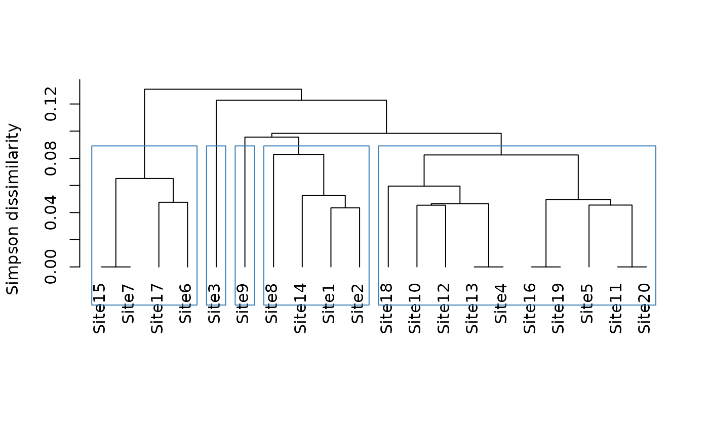
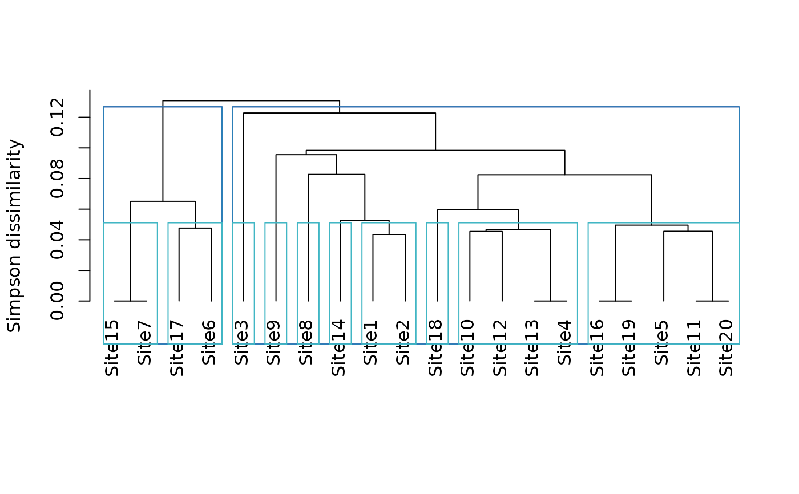

Hierarchical clustering based on dissimilarity or beta-diversity
Source:R/hclu_hierarclust.R
hclu_hierarclust.RdThis function generates a hierarchical tree from a dissimilarity
(beta-diversity) data.frame, calculates the cophenetic correlation
coefficient, and optionally retrieves clusters from the tree upon user
request. The function includes a randomization process for the dissimilarity
matrix to generate the tree, with two methods available for constructing the
final tree. Typically, the dissimilarity data.frame is a
bioregion.pairwise object obtained by running similarity,
or by running similarity followed by similarity_to_dissimilarity.
Usage
hclu_hierarclust(
dissimilarity,
index = names(dissimilarity)[3],
method = "average",
randomize = TRUE,
seed = NULL,
n_runs = 100,
keep_trials = "no",
optimal_tree_method = "ihct",
n_clust = NULL,
cut_height = NULL,
find_h = TRUE,
h_max = 1,
h_min = 0,
consensus_p = 0.5,
show_hierarchy = FALSE,
ihct_top_n_trees = 2,
ihct_variation_drop = 0.2,
ihct_sites_drop = 10,
ihct_height_rule = "least_squares",
ihct_n_workers = 1,
verbose = TRUE
)Arguments
- dissimilarity
The output object from
dissimilarity()orsimilarity_to_dissimilarity(), or adistobject. If adata.frameis used, the first two columns represent pairs of sites (or any pair of nodes), and the subsequent column(s) contain the dissimilarity indices.- index
The name or number of the dissimilarity column to use. By default, the third column name of
dissimilarityis used.- method
The name of the hierarchical classification method, as in hclust. Should be one of
"ward.D","ward.D2","single","complete","average"(= UPGMA),"mcquitty"(= WPGMA),"median"(= WPGMC), or"centroid"(= UPGMC).- randomize
A
booleanindicating whether the dissimilarity matrix should be randomized to account for the order of sites in the dissimilarity matrix.- seed
A value for the random number generator (
NULLfor random by default).- n_runs
The number of trials for randomizing the dissimilarity matrix.
- keep_trials
A
characterstring indicating whether random trial results (including the randomized matrix, the associated tree and metrics for that tree) should be stored in the output object. Possible values are"no"(default),"all"or"metrics". Note that this parameter is automatically set to"no"ifoptimal_tree_method = "ihct".- optimal_tree_method
A
characterstring indicating how the final tree should be obtained from all trials. Possible values are"ihct"(default),"best"or"consensus"."iterative_consensus_tree"is still accepted as another name for"ihct", so that code written for earlier versions of bioregion keeps working. We recommend"ihct". See Details.- n_clust
An
integervector or a singleintegerindicating the number of clusters to be obtained from the hierarchical tree, or the output from bioregionalization_metrics. This parameter should not be used simultaneously withcut_height.- cut_height
A
numericvector indicating the height(s) at which the tree should be cut. This parameter should not be used simultaneously withn_clust.- find_h
A
booleanindicating whether the height of the cut should be found for the requestedn_clust.- h_max
A
numericvalue indicating the maximum possible tree height for the chosenindex.- h_min
A
numericvalue indicating the minimum possible height in the tree for the chosenindex.- consensus_p
A
numericvalue (applicable only ifoptimal_tree_method = "consensus") indicating the threshold proportion of trees that must support a region/cluster for it to be included in the final consensus tree.- show_hierarchy
A
booleanspecifying if the hierarchy of clusters should be identifiable in the outputs (FALSEby default). This argument is only used if the tree is cut (i.e.,n_clustorcut_heightis provided).- ihct_top_n_trees
An
integer(applicable only ifoptimal_tree_method = "ihct") indicating how many of the best randomized trees are used to decide each division of the tree (2by default). See Details.- ihct_variation_drop
A
numericvalue between 0 and 1 (applicable only ifoptimal_tree_method = "ihct"andmethod = "average"). This is an optimization parameter: it reduces the number of times the dissimilarity matrix is randomized while the tree is built, which makes the tree faster to obtain for a very small cost in its fit to the data. Its rule is based on variation: new randomizations are made once a group of sites has lost this share of the variation that was left to decide when they were last made. The default0.2therefore means "randomize again once a fifth of what was left to decide has been decided". Set it to0to randomize at every division, or to1to switch this rule off and leaveihct_sites_dropto decide on its own. See Details.- ihct_sites_drop
A
numericvalue of 0 or more (applicable only ifoptimal_tree_method = "ihct",method = "average"andihct_variation_drop > 0). This is a second optimization parameter, used together withihct_variation_drop, with a rule based on sites rather than on variation: new randomizations are also made once a group of sites has lost this many sites since they were last made (10by default). Set it to0or1to randomize at every division, or toInfto switch this rule off and leaveihct_variation_dropto decide on its own. See Details.- ihct_height_rule
A
characterstring (applicable only ifoptimal_tree_method = "ihct") indicating how the heights of the tree are corrected when a division comes out lower than a division it contains. With"least_squares"(default) the heights are moved as little as possible, which fits the dissimilarities better; with"max_child"each division is raised to the highest division it contains, as in bioregion 1.4.0 and earlier. See Details.- ihct_n_workers
An
integerof 1 or more (applicable only ifoptimal_tree_method = "ihct") indicating how many processes of your computer may build the randomized trees at the same time. With1(default) they are built one after another, as before. Higher values are worth it on large matrices only, and they do not change the tree: the sameseedgives the same result whatever this is set to. See Details.- verbose
A
booleanindicating whether to display progress messages. Set toFALSEto suppress these messages.
Value
A list of class bioregion.clusters with five slots:
name: A
characterstring containing the name of the algorithm.args: A
listof input arguments as provided by the user.inputs: A
listdescribing the characteristics of the clustering process.algorithm: A
listcontaining all objects associated with the clustering procedure, such as the original cluster objects.clusters: A
data.framecontaining the clustering results.
In the algorithm slot, users can find the following elements:
trials: A list containing all randomization trials. Each trial includes the dissimilarity matrix with randomized site order, the associated tree, and the cophenetic correlation coefficient for that tree.final.tree: Anhclustobject representing the final hierarchical tree to be used.final.tree.coph.cor: The cophenetic correlation coefficient between the initial dissimilarity matrix and thefinal.tree.
Details
The function is based on hclust.
The default method for the hierarchical tree is average, i.e.
UPGMA as it has been recommended as the best method to generate a tree
from beta diversity dissimilarity (Kreft & Jetz, 2010).
Clusters can be obtained by two methods:
Specifying a desired number of clusters in
n_clustSpecifying one or several heights of cut in
cut_height
To find an optimal number of clusters, see bioregionalization_metrics()
It is important to pay attention to the fact that the order of rows in the input distance matrix influences the tree topology as explained in Dapporto (2013). To address this, the function generates multiple trees by randomizing the distance matrix.
Two methods are available to obtain the final tree:
optimal_tree_method = "ihct": The Iterative Hierarchical Consensus Tree (IHCT) method reconstructs a consensus tree by iteratively splitting the dataset into two subclusters based on the pairwise dissimilarity of sites acrossn_runstrees based onn_runsrandomizations of the distance matrix. At each iteration, it identifies the majority membership of sites into two stable groups across all trees, calculates the height based on the selected linkage method (method), and enforces monotonic constraints on node heights to produce a coherent tree structure. This approach provides a robust, hierarchical representation of site relationships, balancing cluster stability and hierarchical constraints.optimal_tree_method = "best": This method selects one tree among with the highest cophenetic correlation coefficient, representing the best fit between the hierarchical structure and the original distance matrix.optimal_tree_method = "consensus": This method constructs a consensus tree using phylogenetic methods with the function consensus. When using this option, you must set theconsensus_pparameter, which indicates the proportion of trees that must contain a region/cluster for it to be included in the final consensus tree. Consensus trees lack an inherent height because they represent a majority structure rather than an actual hierarchical clustering. To assign heights, we use a non-negative least squares method (nnls.tree) based on the initial distance matrix, ensuring that the consensus tree preserves approximate distances among clusters.
We recommend using "ihct" as all the branches of
this tree will always reflect the majority decision among many randomized
versions of the distance matrix. This method is inspired by
Dapporto et al. (2015), which also used the majority decision
among many randomized versions of the distance matrix, but it expands it
to reconstruct the entire topology of the tree iteratively.
We do not recommend using the basic consensus method because in many
contexts it provides inconsistent results, with a meaningless tree topology
and a very low cophenetic correlation coefficient.
For a fast exploration of the tree, we recommend using the best method
which will only select the tree with the highest cophenetic correlation
coefficient among all randomized versions of the distance matrix.
~ Iterative Hierarchical Consensus Tree details ~
The paragraphs below cover the ihct_* arguments of this function. The
algorithm itself is walked through step by step in ihct(), which is the
function doing the work here, and which can also be called on its own if
you want the tree without the rest of this function.
–> Tree quality
ihct_top_n_trees sets how many of the randomized trees, ranked by their
quality (i.e., how well
they fit the dissimilarities with cophenetic correlation coefficient CCC),
are used to decide a division: with 1 the
division is the top division of the best tree; with more, sites are grouped
according to how often they fall on the same side in these trees.
We recommend leaving this to default values, or to a low number of trees,
because it provided the best results in
our tests (highest CCC).
–> Computation time
The algorithm can be long to run because at every division of the tree it has
to randomize n_runs trees. On large datasets, building new
trees at every division makes this method slow. To make the function usable
on large datasets, we provide two optimization parameters. These parameters
make the
algorithm reuse previously randomized trees at new division, unless a
threshold of change is reached:
ihct_variation_dropis based on the amount of variation from the dissimilarity matrix. It triggers a new tree randomization only when the amount of variation in the group being divided has reached a threshold since last randomization (default: 20% drop in variation). In other words, new randomizations happen only when tree divisions reach a certain threshold of variation since the last randomization. For example, when a tree peels off only 1 site at a time, this argument makes sure no new randomization trigger unless variability reaches the desired threshold.ihct_sites_dropis based on how many sites the group has lost. It triggers new randomizations only when a certain number of sites have been excluded since the last randomization.
These two parameters with their defaults (ihct_variation_drop = 0.2,
ihct_sites_drop = 10) result in marginal
changes in algorithm performance (loss in CCC <0.001) and make the tree
1.5 faster to build. In our tests, the larger the datasets, the higher
the savings with these two optimization parameters. Note, however,
that reusing trees only works with UPGMA currently, so it only applies to
method = "average".
The two arguments work as a pair, and each of them can be set so that the other no longer has any effect. A new randomization is made as soon as either of them asks for one, so whichever of the two asks more often is the one that decides:
ihct_sites_drop = 1(or0) means new randomizations every time a site is treated (so randomizations at every division, andihct_variation_dropis never used).ihct_variation_drop = 0likewise means new randomizations at every division, andihct_sites_dropis then never used.ihct_variation_drop = 1never triggers new randomizations, leavingihct_sites_dropto decide on its own, andihct_sites_drop = Infnever triggers randomizations, leavingihct_variation_dropto decide on its own.Both switched off (
ihct_variation_drop = 1andihct_sites_drop = Inf) randomizes once, at the first division, and reuses those trees for the whole tree. This is the fastest setting and the one that fits the data least well.
To reproduce the tree that bioregion 1.4.0 and earlier produced, for the
same seed, use:
hclu_hierarclust(dissimilarity,
method = "average",
optimal_tree_method = "ihct",
n_runs = 100,
ihct_top_n_trees = 2,
ihct_variation_drop = 0,
ihct_height_rule = "max_child")–> Height of nodes in the tree
The height of nodes in a tree must be monotonous, i.e. a child node cannot be have a higher height than its parents. However, this situation can happen when building the tree, which is why all tree construction algorithms have a monotonicity section where node height is recalculated.
ihct_height_rule decides how we do it in IHCT. "max_child" raises every
division to the
highest division it contains, which is simple but can push a division far
above the dissimilarities it summarizes. "least_squares" (default) instead
moves the heights as little as possible, which with method = "average"
gives the heights that fit the dissimilarities best on the topology at hand,
so the cophenetic correlation is never below the one "max_child" gives and
is usually above it.
We recommend leaving to default as in our own testing it provides better
performance (highest CCC).
–> Parallelization for quicker computation time
Most of the waiting is spent building the randomized trees, and the runs of
one group do not depend on each other, so ihct_n_workers can share them
between several processes of your computer. This only pays on large
matrices, where a single run is slow enough to be worth sending to another
process: groups of fewer than 200 sites are always done in one process, and
small datasets should be left at ihct_n_workers = 1. We found that
4 workers give good gains (about three times faster on a 5,000-site
matrix); beyond that the processes spend their time waiting for memory
rather than computing, and on a 10,000-site matrix going from 4 workers
to 8 provided only limited gains while doubling the memory needed.
Each worker also needs its own copy of the
dissimilarity matrix on Windows, about 200 MB for 5,000 sites and 800 MB
for 10,000, so ask for fewer workers than your memory allows copies.
Whatever you set, the tree is the same: the random shuffles are always drawn
in the same order by the main process, and only the building of the trees is
handed out to workers.
References
Kreft H & Jetz W (2010) A framework for delineating biogeographical regions based on species distributions. Journal of Biogeography 37, 2029-2053.
Dapporto L, Ramazzotti M, Fattorini S, Talavera G, Vila R & Dennis, RLH (2013) Recluster: an unbiased clustering procedure for beta-diversity turnover. Ecography 36, 1070–1075.
Dapporto L, Ciolli G, Dennis RLH, Fox R & Shreeve TG (2015) A new procedure for extrapolating turnover regionalization at mid-small spatial scales, tested on British butterflies. Methods in Ecology and Evolution 6 , 1287–1297.
See also
For more details illustrated with a practical example, see the vignette: https://biorgeo.github.io/bioregion/articles/a4_1_hierarchical_clustering.html.
Author
Boris Leroy (leroy.boris@gmail.com)
Pierre Denelle (pierre.denelle@gmail.com)
Maxime Lenormand (maxime.lenormand@inrae.fr)
Examples
comat <- matrix(sample(0:1000, size = 500, replace = TRUE, prob = 1/1:1001),
20, 25)
rownames(comat) <- paste0("Site",1:20)
colnames(comat) <- paste0("Species",1:25)
dissim <- dissimilarity(comat, metric = "Simpson")
# User-defined number of clusters
tree1 <- hclu_hierarclust(dissim,
n_clust = 5)
#> Building the iterative hierarchical consensus tree... Note that this process can take time especially if you have a lot of sites.
#>
#> Final tree has a 0.5135 cophenetic correlation coefficient with the initial dissimilarity matrix
#> Determining the cut height to reach 5 groups...
#> --> 0.09375
tree1
#> Clustering results for algorithm : hclu_hierarclust
#> (hierarchical clustering based on a dissimilarity matrix)
#> - Number of sites: 20
#> - Name of dissimilarity metric: Simpson
#> - Tree construction method: average
#> - Randomization of the dissimilarity matrix: yes, number of trials 100
#> - Method to compute the final tree: Iterative hierarchical consensus tree
#> - Cophenetic correlation coefficient: 0.513
#> - Number of clusters requested by the user: 5
#> Clustering results:
#> - Number of partitions: 1
#> - Number of clusters: 5
#> - Height of cut of the hierarchical tree: 0.094
plot(tree1)

str(tree1)
#> $ name : chr "hclu_hierarclust"
#> $ args :List of 20
#> ..$ index : chr "Simpson"
#> ..$ method : chr "average"
#> ..$ randomize : logi TRUE
#> ..$ seed : NULL
#> ..$ n_runs : num 100
#> ..$ optimal_tree_method: chr "ihct"
#> ..$ keep_trials : chr "no"
#> ..$ n_clust : num 5
#> ..$ cut_height : NULL
#> ..$ find_h : logi TRUE
#> ..$ h_max : num 1
#> ..$ h_min : num 0
#> ..$ consensus_p : num 0.5
#> ..$ show_hierarchy : logi FALSE
#> ..$ ihct_top_n_trees : num 2
#> ..$ ihct_variation_drop: num 0.2
#> ..$ ihct_sites_drop : num 10
#> ..$ ihct_height_rule : chr "least_squares"
#> ..$ verbose : logi TRUE
#> ..$ dynamic_tree_cut : logi FALSE
#> $ inputs :List of 9
#> ..$ bipartite : logi FALSE
#> ..$ weight : logi TRUE
#> ..$ pairwise : logi TRUE
#> ..$ pairwise_metric: chr "Simpson"
#> ..$ dissimilarity : logi TRUE
#> ..$ nb_sites : int 20
#> ..$ data_type : chr "occurrence"
#> ..$ node_type : chr "site"
#> ..$ hierarchical : logi FALSE
#> $ algorithm :List of 6
#> ..$ final.tree :List of 5
#> .. ..- attr(*, "class")= chr "hclust"
#> ..$ final.tree.coph.cor: num 0.513
#> ..$ final.tree.msd : num 0.00257
#> ..$ output_n_clust : int 5
#> ..$ output_cut_height : Named num 0.0938
#> .. ..- attr(*, "names")= chr "k_5"
#> ..$ trials : chr "Trials not stored in output"
#> $ clusters :'data.frame': 20 obs. of 2 variables:
#> ..$ ID : chr [1:20] "Site1" "Site10" "Site11" "Site12" ...
#> ..$ K_5: chr [1:20] "1" "2" "2" "2" ...
#> ..- attr(*, "node_type")= chr [1:20] "site" "site" "site" "site" ...
#> $ cluster_info:'data.frame': 1 obs. of 4 variables:
#> ..$ partition_name : chr "K_5"
#> ..$ n_clust : int 5
#> ..$ requested_n_clust: num 5
#> ..$ output_cut_height: num 0.0938
tree1$clusters
#> ID K_5
#> Site1 Site1 1
#> Site10 Site10 2
#> Site11 Site11 2
#> Site12 Site12 2
#> Site13 Site13 2
#> Site14 Site14 1
#> Site15 Site15 3
#> Site16 Site16 2
#> Site17 Site17 3
#> Site18 Site18 2
#> Site19 Site19 2
#> Site2 Site2 1
#> Site20 Site20 2
#> Site3 Site3 4
#> Site4 Site4 2
#> Site5 Site5 2
#> Site6 Site6 3
#> Site7 Site7 3
#> Site8 Site8 1
#> Site9 Site9 5
# User-defined height cut
# Only one height
tree2 <- hclu_hierarclust(dissim,
cut_height = .05)
#> Building the iterative hierarchical consensus tree... Note that this process can take time especially if you have a lot of sites.
#>
#> Final tree has a 0.5135 cophenetic correlation coefficient with the initial dissimilarity matrix
tree2
#> Clustering results for algorithm : hclu_hierarclust
#> (hierarchical clustering based on a dissimilarity matrix)
#> - Number of sites: 20
#> - Name of dissimilarity metric: Simpson
#> - Tree construction method: average
#> - Randomization of the dissimilarity matrix: yes, number of trials 100
#> - Method to compute the final tree: Iterative hierarchical consensus tree
#> - Cophenetic correlation coefficient: 0.513
#> - Heights of cut requested by the user: 0.05
#> Clustering results:
#> - Number of partitions: 1
#> - Number of clusters: 10
#> - Height of cut of the hierarchical tree: 0.05
tree2$clusters
#> ID K_10
#> 1 Site1 1
#> 2 Site10 2
#> 3 Site11 3
#> 4 Site12 2
#> 5 Site13 2
#> 6 Site14 4
#> 7 Site15 5
#> 8 Site16 3
#> 9 Site17 6
#> 10 Site18 7
#> 11 Site19 3
#> 12 Site2 1
#> 13 Site20 3
#> 14 Site3 8
#> 15 Site4 2
#> 16 Site5 3
#> 17 Site6 6
#> 18 Site7 5
#> 19 Site8 9
#> 20 Site9 10
# Multiple heights
tree3 <- hclu_hierarclust(dissim,
cut_height = c(.05, .15, .25))
#> Building the iterative hierarchical consensus tree... Note that this process can take time especially if you have a lot of sites.
#>
#> Final tree has a 0.5135 cophenetic correlation coefficient with the initial dissimilarity matrix
tree3$clusters # Mind the order of height cuts: from deep to shallow cuts
#> ID K_1_1 K_1_2 K_10
#> Site1 Site1 1 1 1
#> Site10 Site10 1 1 2
#> Site11 Site11 1 1 3
#> Site12 Site12 1 1 2
#> Site13 Site13 1 1 2
#> Site14 Site14 1 1 4
#> Site15 Site15 1 1 5
#> Site16 Site16 1 1 3
#> Site17 Site17 1 1 6
#> Site18 Site18 1 1 7
#> Site19 Site19 1 1 3
#> Site2 Site2 1 1 1
#> Site20 Site20 1 1 3
#> Site3 Site3 1 1 8
#> Site4 Site4 1 1 2
#> Site5 Site5 1 1 3
#> Site6 Site6 1 1 6
#> Site7 Site7 1 1 5
#> Site8 Site8 1 1 9
#> Site9 Site9 1 1 10
# Info on each partition can be found in table cluster_info
tree3$cluster_info
#> partition_name n_clust requested_cut_height
#> h_0.25 K_1_1 1 0.25
#> h_0.15 K_1_2 1 0.15
#> h_0.05 K_10 10 0.05
plot(tree3)
